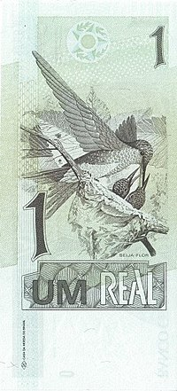
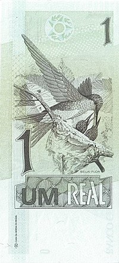

Sobre
O Real (BRL, abreviada como R$) é a moeda corrente oficial da República Federativa do Brasil. Após sucessivas trocas monetárias, o Brasil adotou o real em 1 de julho de 1994, que, aliado à drástica queda das taxas de inflação, constituiu uma moeda estável para o país. Foi implantado no mandato do presidente Itamar Franco, sob o comando do então ministro da Fazenda, Fernando Henrique Cardoso, depois eleito presidente da República. Quando o Real foi lançado, em 1 de julho, o ministro da Fazenda já era Rubens Ricupero, uma vez que FHC já tinha saído para desincompatibilizar-se e ter o direito de se candidatar a Presidente da República.
O real é a 16.ª moeda mais negociada no mundo, é a segunda mais negociada na América Latina e quarta mais negociada nas Américas. Estima-se que hoje existem mais de oito milhões de moedas perdidas do real.
O real é a moeda oficial brasileira, porém, o Banco Central do Brasil permite circulação de moedas privadas e moedas sociais no país, emitidas por bancos comunitários, desde que estas circulem apenas localmente e, sejam lastreadas pela moeda oficial. Portanto, para cada moeda privada/social emitida, o banco comunitário emissor deve possuir R$ 1,00 em caixa.

História
Em julho de 1994, o presidente Itamar Franco cria o Real, cujo plural é reais. Antes que entrasse em circulação, passou vigorou uma unidade de conta, não de troca, chamada URV - Unidade Real de Valor, com variação diária. A economia era estimulada a usá-la como referência. Quando a URV chegou a 2.750 cruzeiros reais, a nova moeda, REAL, entrou em vigor.

Moedas de Real
1 Centavo - 1º Família


Metal: Aço inoxidável (borda lisa).
Anverso: À direita, a efígie representativa da República, ladeada por representação estilizada de ramo de louros. Na parte inferior, a inscrição "BRASIL".
Reverso: Inscrição indicativa de valor, ladeada por ramos de louros. Abaixo, os dísticos "centavo" e o correspondente ao ano de cunhagem.
Obs.: A moeda de um centavo deixou de ser fabricada pela Casa da Moeda do Brasil em dezembro de 2004.
1 Centavo - 2º Família


Metal: Aço revestido com cobre (borda lisa).
Reverso: Pedro Álvares Cabral, navegador português responsável pelo descobrimento do Brasil, e caravela portuguesa.
Obs.: A moeda de um centavo deixou de ser fabricada pela Casa da Moeda do Brasil em dezembro de 2004.
5 Centavos - 1º Família

Metal: Aço inoxidável (borda lisa).
Anverso: À direita, a efígie representativa da República, ladeada por representação estilizada de ramo de louros. Na parte inferior, a inscrição "BRASIL".
Reverso: Inscrição indicativa de valor, ladeada por ramos de louros. Abaixo, os dísticos "centavos" e o correspondente ao ano de cunhagem.
Cedulas de Real
1 Real - 1º Família
 

Frente: Efígie da República, interpretada como uma escultura.
Verso: Beija-flor.
Dimensões: 140 x 65 mm.
10 Reais - 1º Família


Frente: Efígie da República, interpretada como uma escultura.
Verso: Arara
Dimensões: 140 x 65 mm.